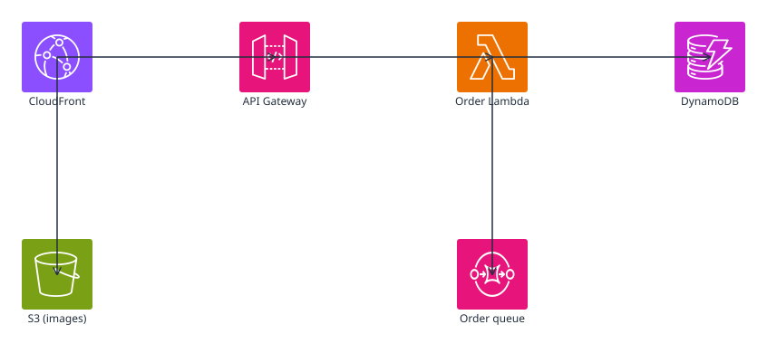
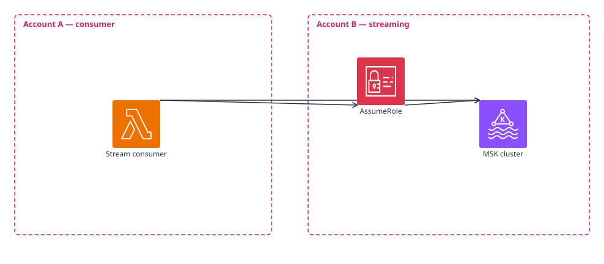
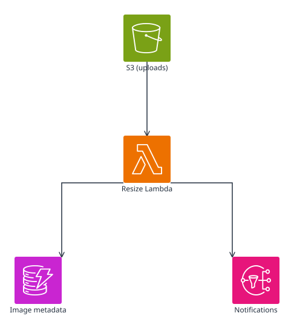

drawio-headless
Author and render .drawio diagrams in Rust. No browser, no DOM, no Node.
drawio-headless is a small Rust workspace that lets you build
drawio-compatible architecture diagrams from a programmatic API and render them
straight to SVG — no Chromium, no Electron, no Puppeteer. The on-disk
.drawio XML is identical to what app.diagrams.net
consumes, so authored documents are interoperable in both directions.
The three worked examples below are each produced by a single Rust file under
crates/examples/examples/.
Running the example writes the .drawio source and the rendered .svg into this
docs/examples/ directory; the page just embeds those files inline.
1. Pet shop e-commerce
CloudFront fronts both an API Gateway and a static image bucket on S3. The gateway invokes a Lambda that writes orders to DynamoDB and pushes async work onto an SQS queue. This is the bread-and-butter API: every service is a single tile and edges connect them midpoint to midpoint.

{kind=link}
Show petshop.rs
use drawio_author::{Diagram, aws};
fn main() -> std::io::Result<()> {
let mut d = Diagram::new("Pet shop e-commerce");
let cdn = d.add_node(aws::cloudfront("cdn", "CloudFront").at(80.0, 120.0));
let images = d.add_node(aws::s3("images", "S3 (images)").at(80.0, 360.0));
let api = d.add_node(aws::api_gateway("api", "API Gateway").at(320.0, 120.0));
let fn_orders = d.add_node(aws::lambda("fn", "Order Lambda").at(560.0, 120.0));
let ddb = d.add_node(aws::dynamodb("ddb", "DynamoDB").at(800.0, 120.0));
let queue = d.add_node(aws::sqs("queue", "Order queue").at(560.0, 360.0));
d.connect(&cdn, &api);
d.connect(&cdn, &images);
d.connect(&api, &fn_orders);
d.connect(&fn_orders, &ddb);
d.connect(&fn_orders, &queue);
drawio_headless_examples::write_artifacts("petshop", &d)
}
2. Cross-account VPC link
A Lambda in Account A consumes an MSK stream that lives in
Account B by assuming an IAM role across the account boundary.
Each account is rendered as a dashed AWS-account container — the new
GroupKind::AwsAccount primitive that landed alongside this demo.

{kind=link}
Show cross_account.rs
use drawio_author::{Diagram, GroupKind, GroupOpts, aws};
fn main() -> std::io::Result<()> {
let mut d = Diagram::new("Cross-account VPC link");
d.add_group(GroupOpts::new(
"acct-a",
"Account A — consumer",
60.0, 60.0, 420.0, 360.0,
GroupKind::AwsAccount,
));
d.add_group(GroupOpts::new(
"acct-b",
"Account B — streaming",
540.0, 60.0, 460.0, 360.0,
GroupKind::AwsAccount,
));
let consumer = d.add_node(aws::lambda("consumer", "Stream consumer").at(220.0, 200.0));
let role = d.add_node(aws::iam("role", "AssumeRole").at(620.0, 130.0));
let kafka = d.add_node(aws::msk("kafka", "MSK cluster").at(820.0, 200.0));
d.connect(&consumer, &role);
d.connect(&role, &kafka);
d.connect(&consumer, &kafka);
drawio_headless_examples::write_artifacts("cross-account", &d)
}
3. Event-driven image processing
An S3 upload triggers a Lambda that resizes the image, writes metadata to DynamoDB, and publishes a completion notification to SNS. The topology fans out from a single producer to two independent consumers — a different shape from example 1's linear chain.

{kind=link}
Show event_driven.rs
use drawio_author::{Diagram, aws};
fn main() -> std::io::Result<()> {
let mut d = Diagram::new("Event-driven image processing");
let uploads = d.add_node(aws::s3("uploads", "S3 (uploads)").at(320.0, 80.0));
let resize = d.add_node(aws::lambda("resize", "Resize Lambda").at(320.0, 280.0));
let metadata = d.add_node(aws::dynamodb("metadata", "Image metadata").at(140.0, 480.0));
let topic = d.add_node(aws::sns("topic", "Notifications").at(500.0, 480.0));
d.connect(&uploads, &resize);
d.connect(&resize, &metadata);
d.connect(&resize, &topic);
drawio_headless_examples::write_artifacts("event-driven", &d)
}